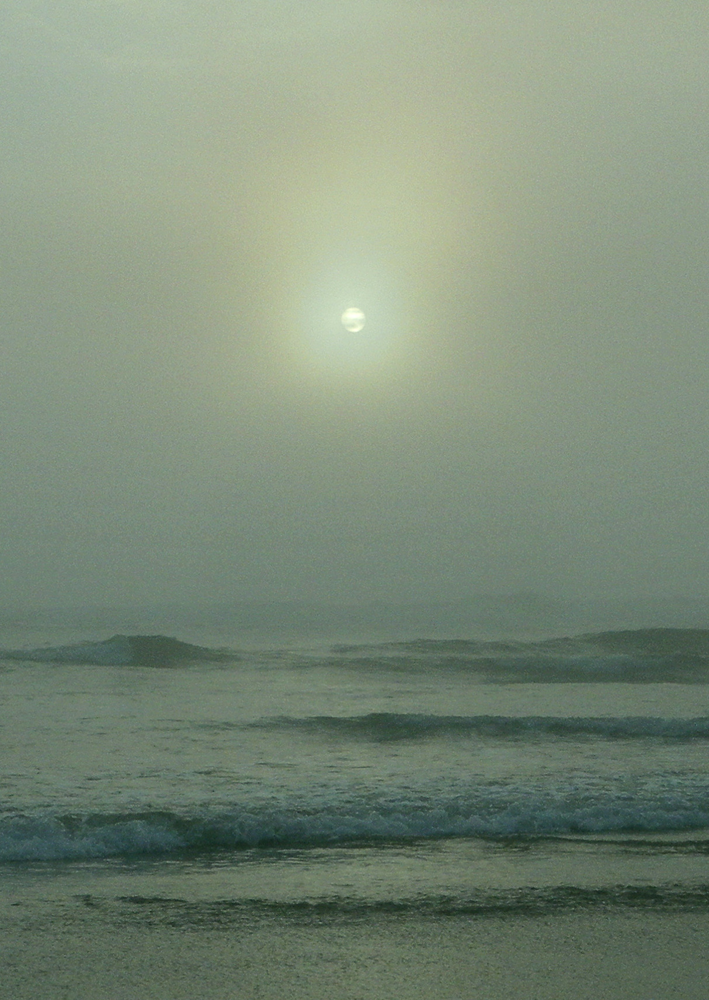

below are some system updates
2022-05-23
- SSL certs generated and HTTPS is configured
- UI updates, added some padding so it is less "plain text file" and more swiss minimalist
2022-02-17
- SSL certs generated and HTTPS is configured
- UI updates, added some padding so it is less "plain text file" and more swiss minimalist
2022-02-06
- Added nav bar
- currently showing: Jenny Holzer's Truisms
- Added stubs for future new pages
2022-01-31
- nginx is configured to pick up user html which means each user has their own tilde page. e.g astral.social/~a
